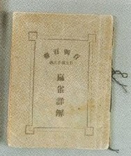
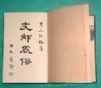
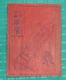
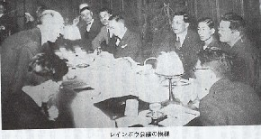

日本への伝播
麻雀は日本へもほぼ同時期、伝播した。初期の伝播者として記録に残るのは、名川彦作という人物＊1とされている。諸伝によれば、名川は早くも明治43年に日本へ麻雀牌を持ち込み、ルールを伝授し、麻雀を楽しんだといわれる。しかしまったく個人的な状況であり、地域も樺太(当時は日本領土)ということもあって、エピソードレベルの事象で終わっている。
＊1麻雀の殿堂No.2「名川彦作」参照
日本への最初の麻雀招来については、「明治16年、中山保洲という人物が南京から水牛骨牌を持ち帰った」という資料が存在するという（「麻雀雑学(鈴木ひろし)」麻雀新聞・昭61・1/10」)。
その資料には、「中山が持ち帰った牌は大正８年に菊池寛に贈与された」との記述があるという。しかし菊池寛自身は「麻雀を始めたのは昭和元年の半ば頃（週刊朝日・昭２・1/9号）」と述懐している。もとより所蔵＝プレーの開始とは限らないが、それでもそこには６年のギャップがある。したがって現時点では今ひとつ検討を要する。
また大正10年３月より７月まで、大阪毎日新聞から中国に特派され、後に旅行記「支那游記」を著した芥川龍之介は特派中に麻雀を覚え、帰国後、中国語の本と首っ引きで 楽しんだとのエピソードも伝えられている（「食いしん坊173（小島政次郎）昭41/7」）。
大正７年（1918年）には東京で麻生雀仙*2が赤坂の洋食屋「梅香亭」の２Ｆを借りて麻雀クラブを開設した。しかしこの麻雀クラブは、少数愛好家のサロン的なものに過ぎず、本格的な流入は大正10年代（1920年代）に入ってからであった。
＊2麻雀の殿堂No.6「麻生雀仙」参照
大正10年代になると、麻雀は本格的に日本へ伝播したが、そのルートは大ざっぱにいって太平洋航路による太平洋ルート、上海方面からの南方ルート*3、北京・山東省からの北方ルート*4、の三ルートに分かれていた。
*3上海を中心にした中支方面で活躍した日本人によるルート。
*4大陸（華北方面）で活躍した日本人によるルート。直接、あるいは朝鮮半島を経由して伝来した。
太平洋ルートは、前述の上海ー米国間の船上で麻雀を覚えた商社マンによりもたらされた経路である。これは第二次大戦後のことであるが、今上天皇も皇太子時代、太平洋航路の船上で麻雀を楽しまれたというエピソードも残っている*5。
AD1953年４月２日、エリザベス２世の戴冠式に昭和天皇のご名代として参列。途次 プレジデント・ウイルソン号に乗船され、同船上で楽しまれる。]（毎日新聞提供)
*5詳しくは歴史「今上陛下と麻雀」参照
日本語による麻雀文献の最初は大正６年(AD1917年)に刊行された肖閑生*6の「麻雀詳解」とされている。

*6麻雀の殿堂「肖閑生」参照
また同時に井上紅梅（いのうえこうばい）*7が大正７年(AD1918年)から大正10年(AD1921年)にわたり、雑誌「支那風俗」*8を刊行、文中で麻雀ルールを詳しく紹介するなど、伝来当初は南方ルートが主流であった。
*7麻雀の殿堂「井上紅梅」参照
*8大正10年、三巻本として出版される。

このような状況の中で大正12年には天津帰りの林茂光(りんもこう)*9が新宿で麻雀の指導をした。*9麻雀の殿堂「林茂光」参照
また山東鉄道勤務を終えて帰国した空閑 緑（くがみどり）*10は、大正13年の夏、四谷に東京麻雀会の看板を掲げ、無報酬で家庭麻雀の出張教授を行うなど、活発な活動を行った。この空閑 緑の無料教授を受けた人が、丹後・宮津の旧藩主、本荘子爵家等の華族などであったことなどから上流家庭に麻雀熱が広がったと云われる。
*10麻雀の殿堂「空閑 緑」参照
大正12年、関東大震災が発生した。銀座にあったカフェー、「プランタン」が新宿区牛込神楽坂で仮営業した。店主、松山省三は著名な画家であり、妻の松井潤子も女優という関係で画家・俳優はもとより多くの文人墨客が出入りし、当時ようやく日本に伝来した麻雀が楽しまれた*11。
*11この店へ洋行帰りの市川猿之助と平岡権八郎が上海で買った麻雀牌を店に持ち込んだ。最初は松山省三・松井潤子夫妻を初め、佐々木茂索、広津和郎、片岡鉄兵などがうろ覚えでやっていたが、やがて後に牌聖と謳われる林茂光を初め、前島吾郎、古川緑波、川崎備寛、長尾克など、多くの文人、画家、芸能人が集まり、麻雀を楽しんだ(改造・S5/4 南部修太郎「麻雀を語る」)。麻雀時代の夜明けを告げる光景であり、これを世にプランタン時代と称する。後年、このとき指導を受けたメンバーが日本麻雀界の指導者となる。
書籍関係では、大正13年６月、北野利助が「麻雀の遊び方(快声堂*12」を著し、同年７月には台東区浅草の下方屋(加留多・玩具等の卸問屋)が骨牌税が不要な麻雀牌の輸入を企画した。この宣伝用を兼ね、林茂光が麻雀入門書「支那骨牌・麻雀」(文庫判)を上梓した。この「支那骨牌麻雀*13」は表紙が赤色だったので赤本と通称され、折からの麻雀ブームにものって十万部を越すベストセラーとなった14。
*12日本国内初刊行の入門書。
*13支那骨牌麻雀

この書は氏が中国物産公司勤務時代、麻雀牌を売るために著したPR誌が下地になっているという。
マスコミ関係では、関東大震災(大正12年)の翌年(AD1924）の春、婦人画報に写真入りで麻雀が紹介され、サンデー毎日が募集した社交的室内遊戯に麻雀が当選して同誌上にルールが紹介された。
さらに大正15年正月には、空閑 緑が報知新聞の依頼により趣味欄に「麻雀の話」を数回連載し一般に麻雀が知られるきっかけとなった。また昭和３年５月15日にはＪＯＡＫより空閑 緑を講師として「麻雀の話」が趣味講座の一環として放送された*14。また同時期に司忠*15も麻雀の起源についてＮＨＫより放送を試みている17。
*14この内容は「趣味講座（北隆館・昭四・2/28）」に収録されている。
*15麻雀の殿堂「司忠」参照
空閑 緑は大正13年(AD1925)の夏、四谷に東京麻雀会の看板を揚げた。そして昭和２年(AD1927)10月１日、「麻雀春秋」を創刊（ニュース型）。そして昭和３年には銀座尾張町、上海亭２Ｆに移転して東京麻雀倶楽部を設立し、昭和４年にはこれを日本麻雀連盟と改称し、ついに日本に第一次麻雀ブームが出来した。
麻雀ブームの波に乗って多くの麻雀団体が結成されたが、揺籃期のこととてルールは各団体マチマチであった。そこで昭和３年３月25日、東京麻雀会で日本最初のルール協定委員会が開かれ、門前清・清一色等の問題が討議された*16。
*16林茂光起案の東京麻雀会ルールと空閑案を交えて討議された。この結果は「麻雀記録帳(空閑 緑・AD1928)」に掲載されている。
そして翌昭和４年４月11日、この流れを受けて丸の内・大阪ビル内のグリル「レインボウ」にて各団体の代表が集合し、ルール統一会議が開かれた。

そして符底20符*17、門前清加符10符*18、満貫500点*19など、今日のルールの基本はこの会議で決まった。
*17符底20符は当時も主流ではあったが、10符方式、40符方式なども混在していた。
*18門前清加符は、以後、日本麻雀の特徴として今日に受け継がれている。この門前清加符の採用により、以後、門前清重視が日本麻雀特徴となった。
*19当時、満貫三百点、四百点、五百点の３方式が混在していた。満貫五百点（１人分） は立直麻雀換算二千点（４人分で八千点となる)。
今日 これはレインボウ会議と称され、日本麻雀史の一頁を飾るエポックメイキングな会議となっている*20。
*20出席者は子爵・浜尾四郎、文豪・菊地寛を初め、空閑緑・宝田通元・寺木定芳・長尾 克・林茂光・杉浦末郎・松山省三・菅忠雄・藤井尚治・田口弼一・大池真・木村衛・西 門慶・河村一郎・田中隆一郎・矢田真太郎・西東南北・小菅弘・前田清・高橋緑鳳・船木慶一・榛原茂樹・武天祐(李天公代理)・伊藤忠夫の２６名。
また空閑 緑が設立した日本麻雀連盟は昭和７年(AD1932)、実業麻雀連盟（代表・杉浦末郎）、本郷麻雀会（代表・高橋緑鳳）、昭和麻雀会（代表・前田清）、日本雀院（代表・榛原茂樹）等、各地の麻雀団体と合併し、大日本麻雀連盟(総裁、久米正雄)となった。
大日本麻雀連盟が発足したのちも空閑 緑は引き続き中央委員長、機関誌「麻雀春秋」編集長として関与したがやがて運営上の問題から袂を分かち、新たに西銀座越後屋ビルに日本麻雀聯盟を設立するなどの経緯もあった。
空閑 緑は その後 麻雀の普及にともない、トップ賞の在り方などで警察より賭博性が指摘されると東京麻雀粛正同盟を設立。麻雀の健全な発展に尽力を続けた。
技法の変遷
麻雀が普及するにつれ、ルールも日本式の改変が行われるようになった。門前清加符の制定などもその一つであるが、この他の大きな変革はサイド計算の消滅と放銃一人払いルールの成立である。
サイド*21は和了があった時、アガらなかった者同士が、互いの手牌の状況をもとに点数を精算するルールである。大正中期の麻雀が伝来した当時、サイド計算も含めてルールはすべて中国流で行われた*22。
*21サイドはアメリカ麻雀用語。中国用語では「小副(オマケの副り点)」というが、日本人には発音しにくい事と、刻子や対子の小符との混同を避ける意味合いもあってアメリカ用語が用いられた。また日本では「横」とも呼称された。
*22サイドについての詳細は、論考「麻雀点数論６」参照
やがて得点が精算法から四捨六入法へ移行するとともに、サイドもこれにしたがって計算された。昭和５〜６年頃、栄和が一人払いになった事によりサイド計算は次のように変化した。
(１)摸和のときはサイド精算を行わない。
(２)栄和のときでもノー聴者はサイドに関係しない。
(３)放銃者はサイド料取得権なし。支払い義務のみあり(片サイドという)。また自分の手牌との差額計算はできない。
※「満貫発生のときサイド計算はしない」、「サイドの上限を満貫点とする」などは古式と同じ。
しかしこのサイドは計算が面倒な事もあり、昭和10年頃には完全に消滅した。
また昭和５年頃になると一般麻雀において栄和(ロンホー)*23は放銃者払い*24というルールが急速に普及しはじめた。この栄和放銃者払いというルールが なぜ日本麻雀で登場してきたのか定かではないが、一説には花札の八八ルールに由来すると言われる*25。
*23中国麻雀では「和了（フーラ)」、または「麻雀」、あるいは「ポン」。しかし「和了（フーラ）」では迫力に欠ける。また「ポン」では通常の「ポン」と混同しやすい。そこで日本麻雀草創期の指導者、林茂光が端的な表現を捜していたところ、中国に「ロン」という発声がある事を知り、これに「栄」という字を当てて紹介したところ普及した。後に「ロン」は「取る」とか「抑える」という意味の「才龍」という字である事が判明した。そこで氏は後に字の訂正を発表したが、すでに「栄」が普及しており今日に至っている。
*24中国麻雀は摸和、栄和に関係なく常に三人払いであった。
*25昭和３年に刊行された中村徳三郎の「麻雀疑問解答」の中に(p33)、「他人の清一色等の危険な牌を打って和了させるなどというやり方は、たとえば『ハチハチ』で自分に『青よろ』したいが為に、預かりの『赤よろ』の札を捨てるのも同様なやり方で」という記述がある。この記述は包牌ルールを説明する中でなされているものであるが、当時の碩学の著書の中で、すでに八八ルールを引き合いに出した記述がなされていることは重要な示唆を含んでいる。
また一説には他のプレーヤーの行為が自らの失点につながるのが日本人の国民性に合わなかっただけとも言われるが、いずれにせよ不分明である。
伝統的な３人払いルールを採用していた麻雀諸団体は、当初は静観していた。しかし世の趨勢に抗しきれず、昭和７年より栄和放銃者払いをＢルールとして採用、翌８年からは逆に三人払いルールを廃止し、放銃者払いルールのみを正式ルールとして採用するに至った。
この放銃者払いルールはサイド計算の消滅とともに、技法にきわめて大きな変革をもたらした。サイド計算あり、摸和・栄和に関係なく三人払いのルールでは、アガリがあればそれに関与していなくてもプレーヤー全員に常に得点の移動が生じる。となれば自ずからその内容は四人共同の利害関係を強く保った形のゲームとなる*26。
*26中国麻雀における包則（ＡプレーヤーがＢプレーヤーに大役を完成させたとき、その 支払いに関してはＡプレーヤーの責任払いとするルール）は、このため生まれた。
それがサイド計算も無くなり、栄和が放銃者払いとなることによって、プレーヤーの独立性が高い内容のゲームへと変貌した。これは後に日本麻雀の中から競技麻雀というジャンルを生み出す土壌ともなった。
|